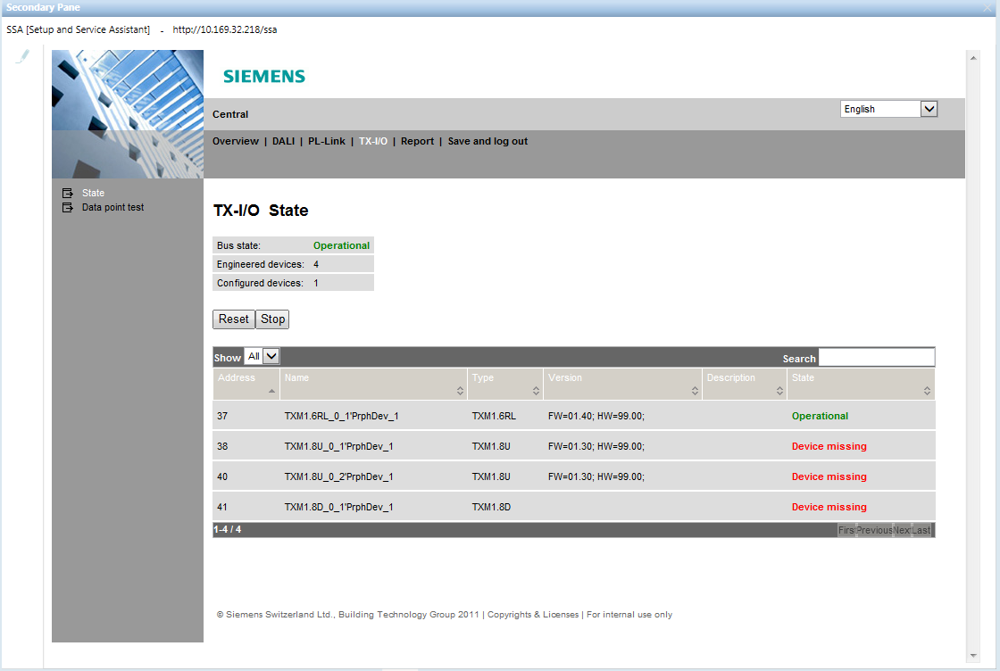
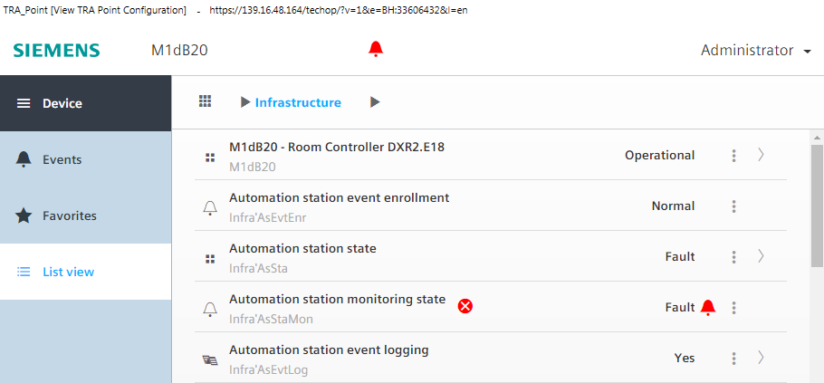
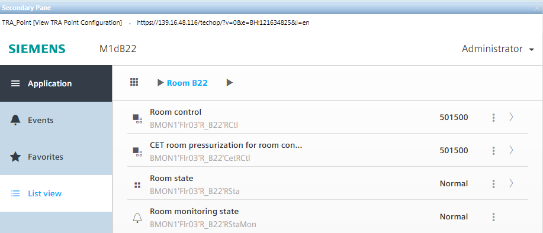
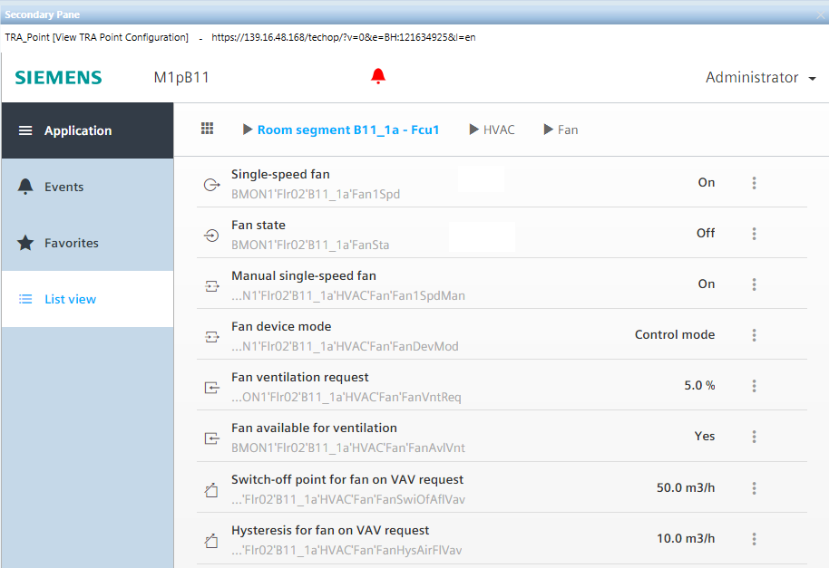
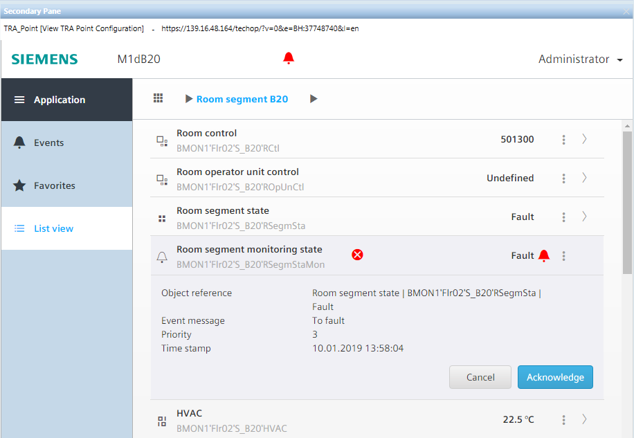
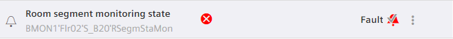

Operate Detail Functions on the Automation Station
Desigo CC does not fully support all features and functions on the Desigo automation station. Full support can, however, be achieved by operating the SSA Wizard or ABT-SSA Wizard or the Web Interface for the Desigo room automation station. Login on the Desigo automation station is simplified by defining the user groups and password in Desigo CC.
Test TX-I/O Status Desigo V5.1
The Setup and Service Assistant allows access to all field devices of a Desigo automation station.

- System Manager is in Engineering mode.
- In System Browser, select Logical view.
- Select Logical > [Network name] > [Room name].
- Select the Related Items tab and then Device.
- Click Display Hardware Configuration.
- The Log on dialog box for the Setup and Service Assistant is displayed in the Secondary pane.
- Complete the name and password fields and click Log on.
NOTE: The password is permanently defined in the BACnet tab, in the Backup & Restore expander, in the Reinitialize Password field. - Proceed as recommended in the document Desigo Automation - Setup & Service Assistant (CM111050).
Test TX-I/O Status Desigo V6.0
The ABT-SSA tool accesses BACnet objects on a Desigo automation station. A description of ABT-SSA is available separately.

Note:
The user interface as well as application home page may differ depending on the version of the Desigo automation station. The description below refers to the Desigo Automation 1.20.
Prerequisites:
- The user name and password are defined on the management platform for logging on to ABT-SSA.
- System Manager is in Operation mode.
Display Info on Automation Station
- In System Browser, select Management View.
- Select Project > [Network name] > Hardware > [Automation station name].
- Select the Related Items tab and then Device.
- Click Display Point Configuration.
- The automation station is displayed in the Secondary pane.

Display Room Info
- In System Browser, select Logical view.
- Select Logical > [Network name] > […] > [Room name].
- Select the Related Items tab and then Device.
- Click Display Point Configuration.
- The room info is displayed in the Secondary pane.

Display Object Info (e.g. Fan)
- In System Browser, select Logical view.
- Select Logical > [Hierarchy name] > [Room name] > [Room segment]> [HVAC] > Fan.
- Select the Related Items tab and then Device.
- Click Display Point Configuration.
- The room info is displayed in the Secondary pane.

Display and Acknowledge an Alarm
- On the Alarm Summary bar, click Alarm priority.
- A filtered alarm list opens.
NOTE: The alarm can be acknowledged directly in the Command column. - Select the alarm and in the Source column, click the text displayed.
- Select the Related Items tab and then Device.
- Click Display Point Configuration.
- The information is displayed in the Secondary pane.
- Click the alarm bell.
- The acknowledge alarm dialog box opens.

- Click Acknowledge.
- One less alarm is displayed in the alarm summary bar (for example, 0/1) and displayed as acknowledged in the open dialog box.

- Correct the fault to eliminate it.